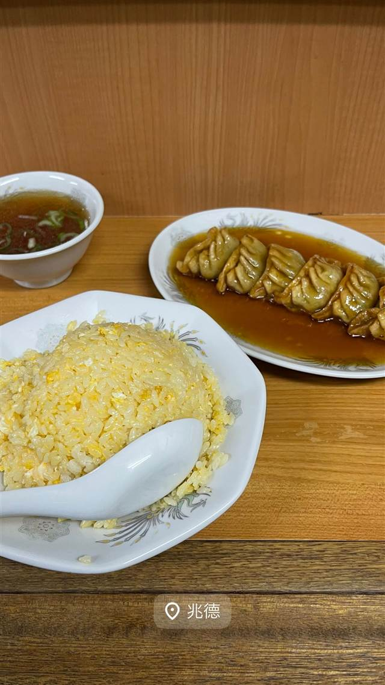

町中華 · 町中華 · 本駒込
中華 兆徳
塩味に変えて評判に、パラパラ玉子炒飯と1日600個の餃子
兆徳
1995年、中国から来日した店主・朱徳平氏が本駒込で開いた町中華。当初は日本人向けの味だったが、後に故郷仕込みの塩味の玉子炒飯に切り替えたところ評判となり、今では黄金色でパラパラのチャーハン目当てに行列ができる名店になった。
TRIVIA
豆知識
- 開業当初はしょうゆ味の日本人向け中華だったが、後に故郷仕込みの塩味炒飯に転換して人気に火がついた
- 餃子は1日平均600個を売る
REVIEWS
世間の評判
3.26食べログ
持ち帰り中華のボリューム感
- ボリューム満点で量に対して安いというコスパの良さを評価する声が多い
- 本店の行列を避けて手軽にお持ち帰りできる点を評価する声がある
- 量が多すぎて一人では食べきれないと感じる人もいるという声がある
- 味については普通レベルで期待したほどではなかったという声もある
食べログ 口コミ102件
| 創業 | 1995年創業 |
|---|---|
| 系譜 | 店主・朱徳平氏は1991年に来日し、日本で中華料理の修業を積んで1995年に独立開業した。 |
| 看板 | 玉子炒飯（塩味・パラパラ食感）、手包み餃子 |
| こだわり | 黄金色でパラパラの塩味玉子炒飯が看板。餃子は1日平均600個を職人が手包みで仕上げる。 |
| 掲載・評価 | TV「情熱大陸」で紹介された。 |
| どこから | 都心 |
| 行くなら | 行列 |
| 営業時間 | 月〜日 11:00-14:30、17:00-21:30 |
| 予算 | 昼 ¥1,000～¥1,999 夜 ¥1,000～¥1,999 |
| 場所 | 本駒込駅 東京都文京区向丘1-10-5 |
| メモ | 本駒込駅すぐ、20席ほどの小さな店。週末は30〜40人が行列することもある。 |
食べたもの：炒飯と餃子
NEARBY
近い店・同じ系統の店
-
 町中華 東銀座駅
中華 銀座亭
「つけ麺大王」のフランチャイズから3代続くみそチャーシュー
夜 ¥1,000～¥1,999
町中華 東銀座駅
中華 銀座亭
「つけ麺大王」のフランチャイズから3代続くみそチャーシュー
夜 ¥1,000～¥1,999
-
 町中華 大井町
丸吉飯店
目の前で焼き上げる、肉汁あふれる大ぶり手作り餃子
昼 ～¥999 夜 ～¥999
町中華 大井町
丸吉飯店
目の前で焼き上げる、肉汁あふれる大ぶり手作り餃子
昼 ～¥999 夜 ～¥999
-
 町中華 神楽坂駅
龍朋（りゅうほう）
東京三大チャーハンの一つ、ラードでしっとり炒め上げる一皿
昼 ～¥999 夜 ～¥999
町中華 神楽坂駅
龍朋（りゅうほう）
東京三大チャーハンの一つ、ラードでしっとり炒め上げる一皿
昼 ～¥999 夜 ～¥999
-
 町中華 不動前駅
中華 味一 本店
商標登録済みの「背脂炒飯」は宮城県産つや姫を背脂で仕上げる名物
昼 ¥1,000～¥1,999 夜 ¥1,000～¥1,999
町中華 不動前駅
中華 味一 本店
商標登録済みの「背脂炒飯」は宮城県産つや姫を背脂で仕上げる名物
昼 ¥1,000～¥1,999 夜 ¥1,000～¥1,999
-
 町中華 宮崎台
北京 川崎宮崎台店
あんかけ仕立てで熱々が続く、1972年創業の担々麺と餃子
昼 ¥1,000～¥1,999 夜 ¥1,000～¥1,999
町中華 宮崎台
北京 川崎宮崎台店
あんかけ仕立てで熱々が続く、1972年創業の担々麺と餃子
昼 ¥1,000～¥1,999 夜 ¥1,000～¥1,999
-
 町中華 田町駅
中国家庭料理大連
蒲田餃子御三家と同じ八木家が作る羽根つき餃子とあんかけ炒飯
昼 ～¥999 夜 ¥2,000～¥2,999
町中華 田町駅
中国家庭料理大連
蒲田餃子御三家と同じ八木家が作る羽根つき餃子とあんかけ炒飯
昼 ～¥999 夜 ¥2,000～¥2,999